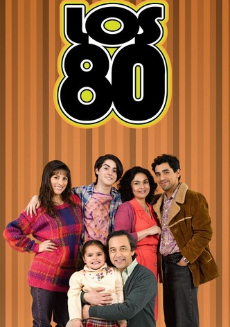

| Otras Décadas | Ilustracion | Informacion |
|---|---|---|
|  | En los años ochenta Internet todavía no existía Internet tal y como lo conocemos hoy, pero el concepto de enviarle información a los usuarios a través de líneas telefónicas ya había nacido. Y precisamente uno de los intentos en los que se intentó conseguir fue mediante la tecnología del Videotex |